Le service Qualité est la tour de contrôle de la conformité : il centralise les PV de contrôle, les non-conformités et leur résolution (8D), les dérogations, la libération des lots avant expédition, la quarantaine, le parc d'équipements de mesure (ECME), la capabilité des machines, les périssables, le plan de contrôle EN 9100 et le programme d'audits internes. Ce manuel décrit chacun des 13 onglets, écran par écran.
👤 Pour qui : Qualiticien(ne) (écriture : Qualité, Sécurité · lecture : BE, Production, OAS, Expéditions, Stock, Maintenance)🧭 Dans l'ERP : Sidebar → Qualité🗂 13 onglets
1
PV de Contrôle
À quoi ça sert. Cet onglet rassemble tous les procès-verbaux de contrôle qualité de l'usine, quelle que soit leur origine : un PV peut provenir de l'OAS (balancelle clôturée), d'un BDT soldé, d'un BL fournisseur (contrôle de réception), d'un BL sous-traitant (retour de sous-traitance) ou d'un retour client. C'est le registre de preuve du contrôle : chaque PV porte un statut, une décision de libération et, le cas échéant, les indices Cp/Cpk.
Ce que vous voyez
En haut, une rangée de filtres par origine (Tous · OAS · BDT · BL Fournisseur · BL Sous-traitant · Retour client), chacun avec son compteur. À droite, un champ Rechercher… et le bouton rouge « Nouveau PV ». Le tableau liste les PV avec les colonnes : N° PV, Date, Origine, Type contrôle, Lien (badge Lot ou BL suivi du numéro), Pièce, Client / Fourn., Cp/Cpk, Statut, Décision, Actions.
Statuts possibles : En cours · Validé ✓ · Refusé · NC ouverte.
La colonne Cp/Cpk est colorée : vert si Cpk ≥ 1,33, orange entre 1 et 1,33, rouge en dessous de 1 ; « N/A » si le PV n'a pas de mesure.
Deux boutons d'action par ligne : Ouvrir NC (triangle rouge — bascule vers l'onglet Non-Conformités avec le formulaire de création) et Libérer lot (cadenas vert — bascule vers l'onglet Libération Lots).
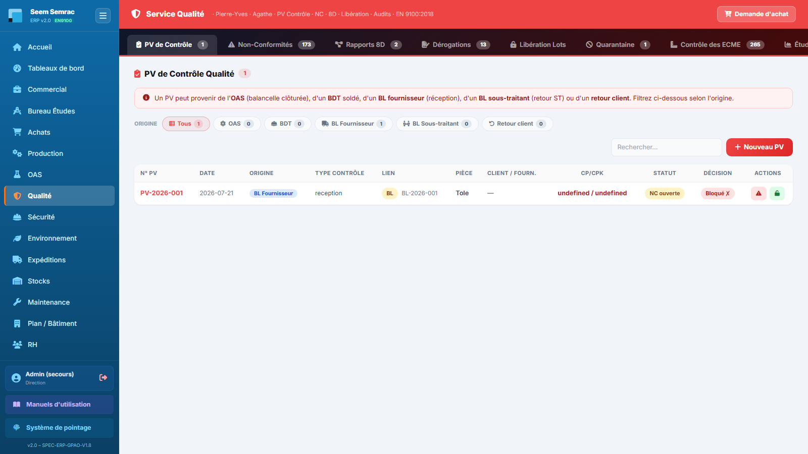
PV de Contrôle — les pastilles d'origine en haut filtrent le tableau ; repérez les colonnes Statut et Décision qui résument le sort de chaque contrôle.
Pas à pas — créer un PV manuellement
Cliquez sur « Nouveau PV » : la fenêtre de saisie s'ouvre.
Renseignez la date et le type de contrôle (autocontrôle, intermédiaire, final, réception fournisseur).
Choisissez le rattachement : « Lié à un Lot » ou « Lié à un BL », puis saisissez le numéro correspondant (LOT-2026-XXX ou BL-2026-XXX).
Complétez la pièce, le client, éventuellement les indices Cp et Cpk, et vos observations.
Cliquez sur « Créer le PV » : le PV rejoint la liste.
Champ
Saisie
Obligatoire
Explication
Date PV
Date
Recommandé
Date du contrôle.
Type contrôle
Liste
Recommandé
Autocontrôle · intermédiaire · final · réception fournisseur.
Lié à un Lot / à un BL
Bouton bascule
Oui
Détermine si le PV se rattache à un lot de production ou à un bon de livraison.
N° Lot ou N° BL
Texte
Oui
Numéro du lot (LOT-2026-XXX) ou du BL (BL-2026-XXX) contrôlé.
Pièce / Client
Texte
Non
Référence de la pièce et raison sociale concernées.
Cp / Cpk
Nombres
Non
Indices de capabilité si un relevé de cotes a été fait.
Observations
Texte libre
Non
Constat du contrôle.
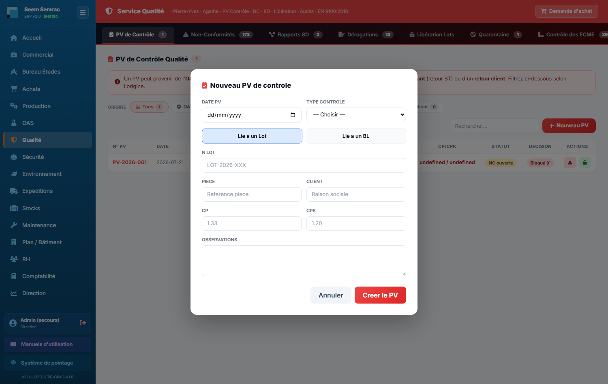
Nouveau PV — le rattachement Lot/BL se choisit avec les deux boutons bleus au centre du formulaire.
Règles & points d'attention
La plupart des PV arrivent automatiquement depuis les autres services (OAS, Production, Expéditions) : la création manuelle sert surtout aux cas hors flux.
Utilisez le filtre d'origine avant de chercher : un PV de réception se trouve sous « BL Fournisseur », pas sous « BDT ».
Astuce : le bouton « Libérer lot » d'une ligne de PV est le raccourci le plus court vers l'onglet Libération Lots quand le contrôle final vient d'être passé.
2
Non-Conformités
À quoi ça sert. C'est le registre central des non-conformités (NC). Les NC peuvent être créées automatiquement par l'ERP (fin de balancelle OAS non conforme, soldage de BDT, réception fournisseur) ou manuellement ici. De chaque NC partent les suites : rapport 8D, dérogation, mise en quarantaine, et — pour une NC client — le traitement du retour (avoir ou commande prioritaire).
Ce que vous voyez
Sous le bandeau d'information, deux rangées de filtres : Catégorie (Toutes · Administratif · Production) et Entité (Toutes · Seem · Semrac), plus un champ de recherche et le bouton « Nouvelle NC ». Le tableau est très complet : N° NC, Entrée, Fin traitement, Type NC, Catégorie, Entité, Lot, Article, Fournisseur, Client, Détection, Imputation, FRC, Gravité, Statut, Actions.
Statut : En cours · 8D ouvert · Clôturé ✓ / Traité ✓. Un badge supplémentaire apparaît si la NC est passée en validation Direction.
Le numéro de NC est cliquable (souligné) : il rouvre la NC dans son formulaire pour la modifier.
Actions par ligne : « Ouvrir 8D » (ou « 8D en cours » si déjà lancé), créer une dérogation liée (icône signature), mettre en quarantaine (icône caisse) et, sur les NC de type client, le bouton violet « Retour » — remplacé par un badge vert une fois le retour traité (Avoir AV-…, Cmd P …, ou Refusé).
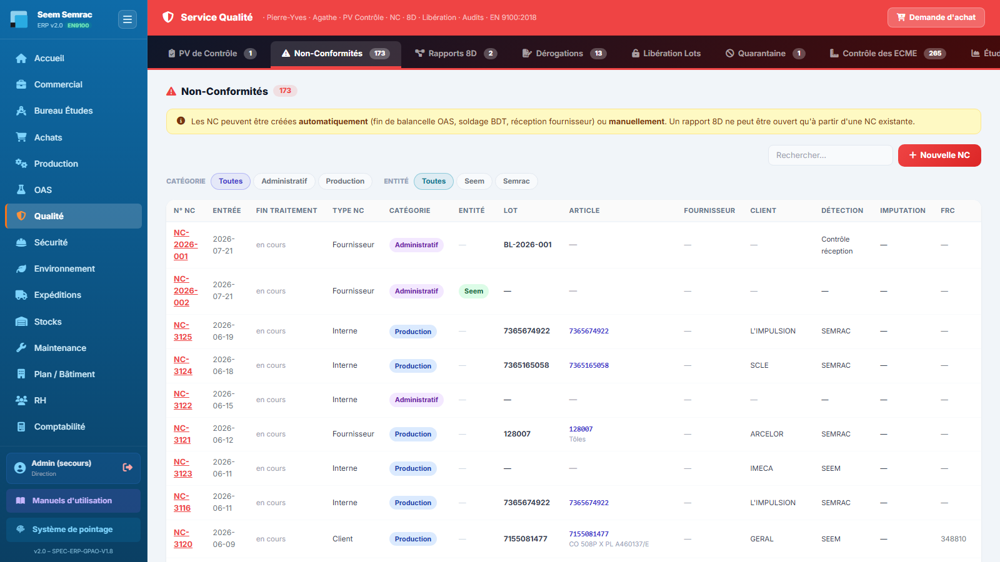
Non-Conformités — les boutons d'action à droite déclenchent tout le circuit aval : 8D, dérogation, quarantaine, retour client.
Pas à pas — déclarer une NC
Cliquez sur « Nouvelle NC ».
Choisissez la catégorie : « Administratif » ou « Production ». Pour une NC de production, choisissez aussi l'entité (Seem ou Semrac) — une NC administrative n'est pas rattachée à une entité (le champ disparaît).
Renseignez le type de NC, la gravité, le détecteur, la nature du défaut et de la cause, l'action immédiate, le lot, l'article, le lieu de détection et l'imputation (voir tableau ci-dessous).
Cochez si besoin « Soumettre à la validation de la Direction » : la NC apparaîtra dans Direction › À valider (automatique en priorité « urgent » pour une gravité Critique ou Bloquante).
Cliquez sur « Créer NC » : la NC est numérotée et rejoint la liste.
Pas à pas — traiter un retour client
Sur une NC de type client, cliquez sur « Retour » : la fenêtre « Traiter le retour client » s'ouvre, préremplie (client, référence, lot, nombre de pièces).
Renseignez le n° de facture et le n° d'affaire — ce dernier sert de base à la numérotation : l'aperçu affiche en direct les futurs numéros AV-AAAA-XXX (avoir) et CMDP-AAAA-XXX (commande prioritaire).
Saisissez le nombre de pièces NC, le prix de vente unitaire (→ montant de l'avoir, calculé en direct) et/ou le coût de revient unitaire (→ coût de la relance).
Choisissez la décision : « Refuser le retour », « Faire un avoir » ou « Commande prioritaire ». L'avoir ou la commande P créés sont visibles dans Commercial › Avoirs & Commandes P ; la décision s'affiche ensuite en badge sur la ligne de NC (le traitement n'est pas rejouable).
Pas à pas — mettre un objet en quarantaine depuis une NC
Cliquez sur l'icône caisse (« Mettre un objet en quarantaine ») de la ligne concernée.
Décrivez l'objet isolé — n'importe quel objet de l'usine : lot, palette, outillage, réception… (champ obligatoire, prérempli depuis la NC), la référence de lot éventuelle et le motif.
Validez : l'objet apparaît dans l'onglet Quarantaine, où la décision de sortie sera prise.
Champ
Saisie
Obligatoire
Explication
Date détection
Date
Non
Jour du constat.
Type NC
Liste
Oui
Interne, fournisseur, client, procédé… (vocabulaire du référentiel qualité).
Catégorie
Administratif / Production
Oui
Détermine le filtre de la liste et si une entité est requise.
Entité
Seem / Semrac
Oui si Production
Site concerné — masqué pour une NC administrative.
Qui a détecté — détermine le badge d'origine (Auto-BDT, Auto-OAS, Client, Fournisseur, Audit, Manuel).
Nature de la NC / de la cause
Listes
Non
Vocabulaires contrôlés — alimentent le Pareto du Dashboard.
Action immédiate / Statut / Responsable
Listes
Non
Suivi du traitement.
Fournisseur / ST · Client
Texte
Non
Raison sociale selon l'origine — le champ Client active le bouton « Retour ».
FRC client
Texte
Non
Numéro de la NC dans le système du client.
LOT concerné · Code article · Désignation
Texte
Non
Rattachement à la production (LOT-2026-XXXX, code nomenclature).
Poste (lieu de détection) · Imputation
Listes
Non
Où le défaut a été vu, et quel service en porte la responsabilité.
Description
Texte libre
Non
Constat détaillé.
Soumettre à la validation de la Direction
Case à cocher
Non
Envoie la NC dans le circuit Direction › À valider.
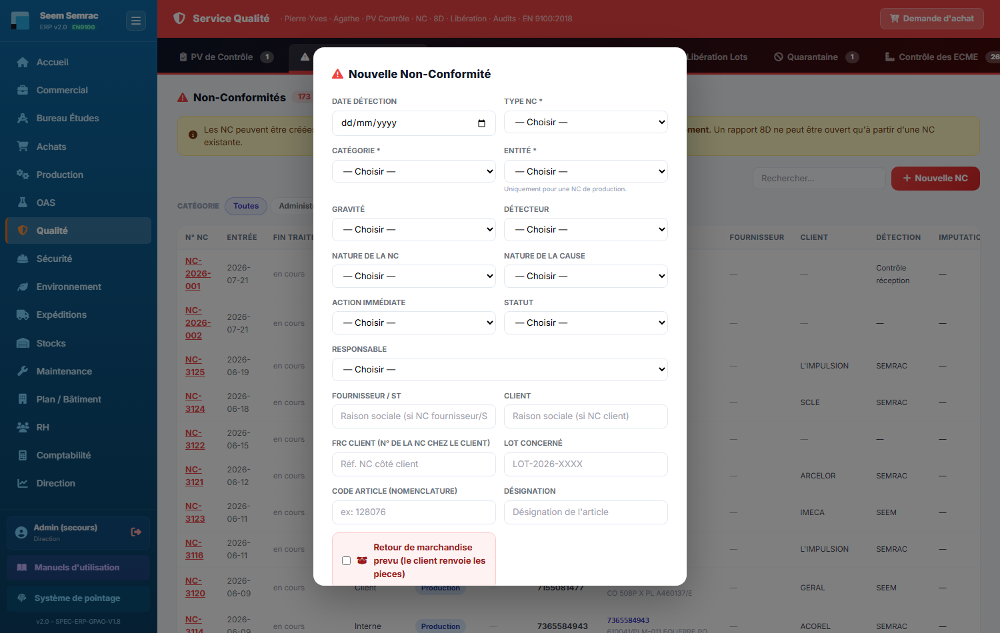
Nouvelle NC — la catégorie conditionne l'affichage du champ Entité ; la case Direction est tout en bas.
Règles & points d'attention
Une NC critique ou bloquante sur un lot bloque ses bons de livraison (porte qualité) : l'expédition refusera le BL tant que la NC n'est pas traitée.
La colonne « Fin traitement » se remplit seule quand le statut devient clôturé/traité ; avant cela elle affiche « en cours ».
Attention : le traitement d'un retour client est définitif : une fois l'avoir ou la commande P créés, le bouton « Retour » est remplacé par le badge de la décision — impossible de le rejouer.
Astuce : remplissez soigneusement Nature, Cause, Poste et Imputation : ce sont les axes du Pareto du Dashboard Qualité, qui oriente les actions de fond.
3
Rapports 8D
À quoi ça sert. Le 8D est la méthode de résolution structurée des problèmes (8 disciplines, exigence EN 9100 §10.2). L'onglet liste les rapports en cours et complétés ; la rédaction elle-même se fait sur une page dédiée (/qualite/8d) qui guide pas à pas de D1 à D8. Un rapport peut être ouvert librement ou depuis une NC (bouton « Ouvrir 8D » de l'onglet Non-Conformités).
Ce que vous voyez
En haut, le bouton « Créer un rapport 8D » ouvre un formulaire de création rapide directement dans la page. En dessous, deux listes : « Rapports 8D à compléter / en cours » (colonnes : N° 8D, Problème, Gravité, Client, Responsable, Statut, Avancement, Actions) et « Rapports 8D complétés » (avec la date de clôture et un bouton « Voir »).
Statuts : Ouvert · En cours · À valider · Clôturé.
La colonne Avancement montre une barre de progression « Dx/8 » : le nombre d'étapes D1→D8 réellement renseignées.
Actions : « Compléter » (ouvre la page 8D du rapport) et ✓ (marquer le rapport comme complété — il passe dans la liste du bas).
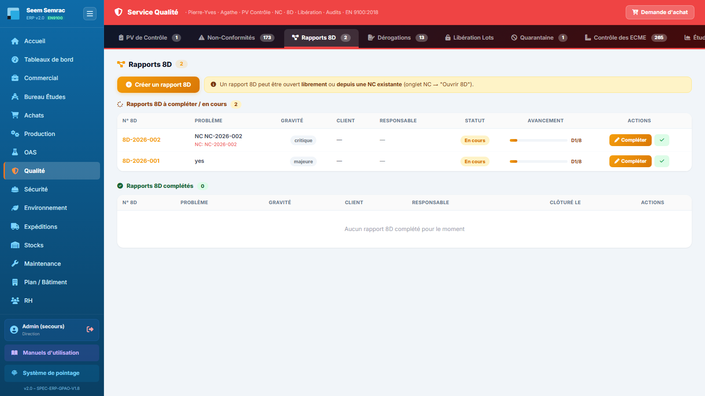
Rapports 8D — la barre d'avancement Dx/8 indique d'un coup d'œil où en est chaque résolution.
Pas à pas — créer un rapport 8D
Cliquez sur « Créer un rapport 8D » : le formulaire se déplie.
Renseignez le titre du problème (obligatoire), le client concerné, la gravité (Majeure par défaut), le lot / la référence produit, le responsable 8D, la date de détection et la description du problème (trame QQOQCCP).
Cliquez sur « Créer le rapport 8D » : le rapport est numéroté puis la page dédiée s'ouvre automatiquement pour poursuivre la rédaction.
Alternative depuis une NC : onglet Non-Conformités → bouton « Ouvrir 8D » — la page 8D s'ouvre préremplie avec les données de la NC.
Pas à pas — dérouler les 8 disciplines (page /qualite/8d)
La page dédiée affiche un fil d'étapes en haut : D1 Équipe · D2 Problème · D3 Inhibition · D4 Causes · D5 Actions · D6 Validation · D7 Préventif · D8 Clôture. Chaque étape est un écran guidé :
D1 — Constitution de l'équipe : responsable et membres du groupe de travail.
D2 — Description du problème : trame QQOQCCP (Qui, Quoi, Où, Quand, Comment, Combien, Pourquoi) pour délimiter précisément le périmètre.
D3 — Actions d'inhibition (containment) : mesures immédiates de protection du client, ajoutables ligne à ligne.
D4 — Recherche des causes : diagramme d'Ishikawa 6M puis 5 Pourquoi pour remonter à la cause racine.
D5 — Actions correctives permanentes : les actions qui suppriment la cause racine, avec pilote et échéance.
D6 — Validation de l'efficacité : preuve que les actions fonctionnent.
D7 — Actions préventives : généralisation aux produits/process similaires.
D8 — Clôture : liste de vérification récapitulant D1→D7, puis clôture du rapport (il passe dans « Rapports 8D complétés »).
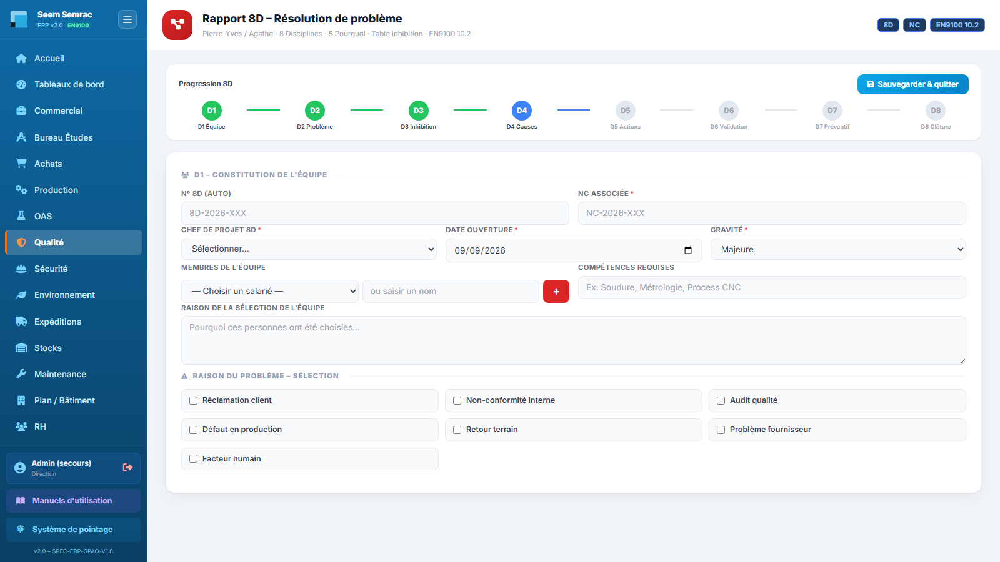
Page 8D — D1 — le fil d'étapes D1→D8 en haut permet de naviguer entre les disciplines.
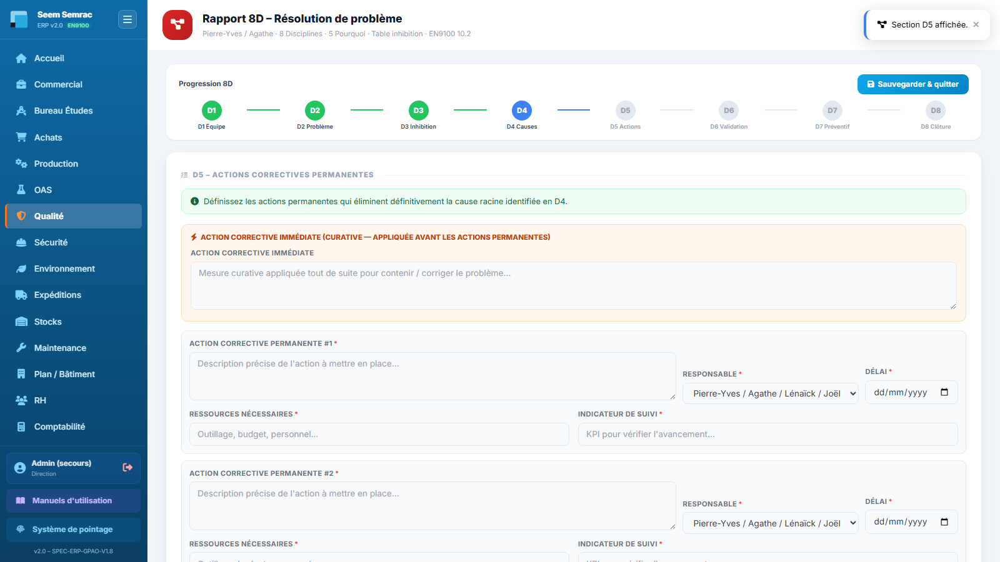
Page 8D — D5 — les actions correctives permanentes se saisissent avec pilote et échéance.
Règles & points d'attention
L'avancement Dx/8 est calculé sur les champs réellement remplis : un rapport « en cours » à D2/8 n'a documenté que l'équipe et le problème.
Sur une NC dont le 8D est déjà ouvert, le bouton affiche « 8D en cours » : cliquer rouvre le rapport existant, il n'en crée pas un deuxième.
Astuce : le bouton ✓ de la liste permet de clôturer un rapport sans rouvrir la page 8D — pratique quand la validation D8 a été faite en réunion.
4
Dérogations
À quoi ça sert. Quand un produit s'écarte de la définition mais reste potentiellement acceptable, on demande au client une dérogation (formulaire bilingue PMQ3-D3, registre PMQ3-D4). L'onglet suit tout le circuit : rédaction → envoi au client → décision du client (accord total, accord limité, refus) → et, en cas de refus, la suite commerciale (avoir ou commande prioritaire).
Ce que vous voyez
Quatre tuiles KPI : Dérogations (total, registre PMQ3-D4), En cours, Accordées (AT + AL), Refusées. Puis une recherche, le bouton « Nouvelle dérogation » et le tableau : N° / Date, Client / Contact, Désignation, Réf., Type, Décision, Statut, Actions.
Décision client : Accord total (AT) · Accord limité (AL) · Refus (R) · en attente.
Statut du dossier : En cours · Envoyée (attente) · Soldée · Annulée.
Actions : Traiter le refus (marteau, visible seulement si la décision est « R » et le dossier non soldé), Exporter PDF, Modifier.
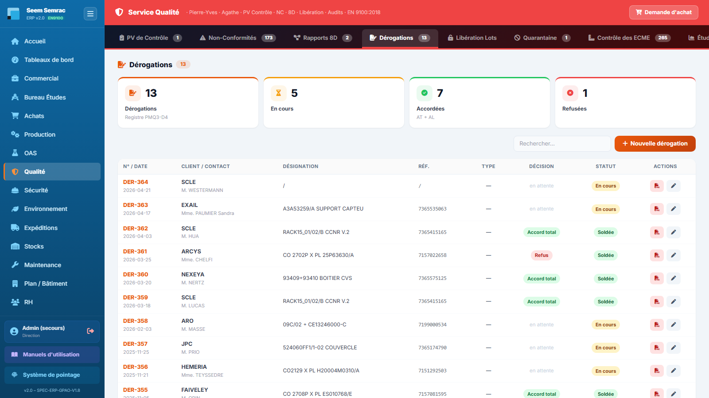
Dérogations — les KPI en tête donnent le solde du registre ; la colonne Décision reflète la réponse du client.
Pas à pas — le circuit complet d'une dérogation
Cliquez sur « Nouvelle dérogation » (ou, depuis une NC, sur l'icône signature : le formulaire s'ouvre prérempli et un bandeau rappelle la NC liée).
Remplissez les blocs Émetteur, Destinataire, Références et le descriptif de la demande (voir tableau).
Enregistrez en statut « En cours (brouillon) », puis exportez le PDF (document bilingue français/anglais avec logo) et envoyez-le au client. Passez alors le statut à « Envoyée au client (attente réponse) ».
À réception de la réponse, rouvrez la dérogation et saisissez la décision : AT (accord total), AL (accord limité) ou R (refus), puis le statut « Soldée » si le dossier est terminé.
Si la décision est R — Refus : cliquez sur le bouton marteau « Traiter le refus ». Renseignez le n° d'affaire (base de numérotation — l'aperçu affiche AV-AAAA-XXX et CMDP-AAAA-XXX), le nombre de pièces, le prix de vente unitaire (→ avoir) et/ou le coût de revient unitaire (→ commande P), puis choisissez : Refus sec, Faire un avoir ou Commande P. Le résultat part dans Commercial › Avoirs & Commandes P et la ligne affiche ensuite « ✓ » avec la décision retenue.
Champ
Saisie
Obligatoire
Explication
Émetteur : Date, Émise par, Service, Tél., Email
Texte / date
Non
Qui émet la demande (Service prérempli « Qualité », email prérempli qualite@seem-semrac.com).
Références croisées de la pièce et de la commande concernées.
Type de demande
AC / AE / AR
Non
Nature de la demande de dérogation.
Descriptif de la demande
Texte libre
Non
L'écart constaté et la justification — repris tel quel sur le PDF.
Décision
— / AT / AL / R
Non
Réponse du client (saisie au retour).
Statut
En cours / Envoyée / Soldée / Annulée
Non
Avancement du dossier.
Commentaire
Texte libre
Non
Précisions internes ou conditions de l'accord limité.
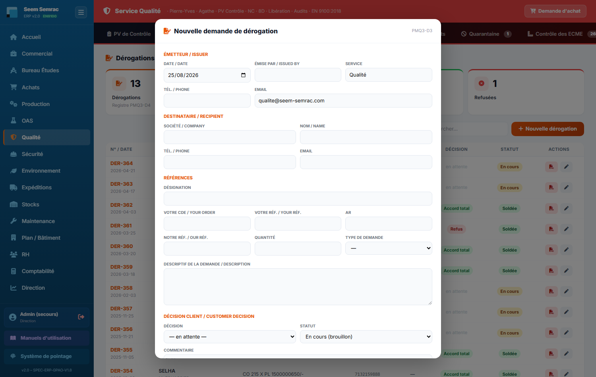
Formulaire PMQ3-D3 — blocs Émetteur / Destinataire / Références / Décision client ; le bandeau rouge signale une dérogation créée depuis une NC.
Règles & points d'attention
Une dérogation peut aussi naître de l'onglet Quarantaine (branche « Dérogation » du bouton Statuer) : elle arrive ici préremplie, à compléter puis à envoyer.
Le traitement d'un refus est idempotent : une fois l'avoir ou la commande P créés, la ligne affiche la décision et le bouton marteau disparaît.
Astuce : le bouton « Exporter PDF » du formulaire fonctionne aussi sur un brouillon non enregistré — pratique pour faire relire le document avant envoi.
5
Libération Lots
À quoi ça sert. C'est le contrôle qualité final avant expédition. Un lot apparaît ici dès que tous ses BDT sont soldés : il doit alors passer un PV de libération — libéré, ou bloqué (départ en quarantaine) — avant de pouvoir partir. Une commande n'est expédiable que si tous ses lots sont libérés.
Ce que vous voyez
Deux tableaux : « Lots terminés à libérer » et « Lots libérés », avec les colonnes N° Lot, Pièce, Commande, Qté, Production (nombre de BDT soldés, coche verte) et Action / Statut. Sur un lot à libérer, le bouton violet « PV de libération » ouvre la décision ; sur un lot libéré, le badge Libéré ✓ indique aussi qui a libéré.
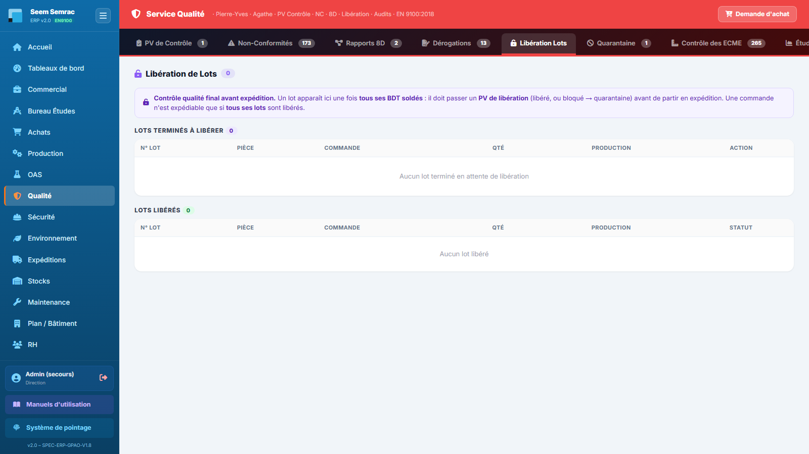
Libération Lots — en haut les lots en attente de décision, en bas l'historique des lots libérés.
Pas à pas — libérer (ou bloquer) un lot
Dans « Lots terminés à libérer », cliquez sur « PV de libération » du lot concerné.
Renseignez éventuellement Cp et Cpk (facultatifs) et vos observations (conformité dimensionnelle, aspect, documents…).
Choisissez : « Libérer le lot » — un PV est créé, le lot passe dans la liste des libérés et devient expédiable — ou « Bloquer (quarantaine) » — le lot est mis en quarantaine et se traite dans l'onglet Quarantaine.
Règles & points d'attention
Tant qu'un seul lot d'une commande n'est pas libéré, l'expédition de la commande reste bloquée côté Expéditions.
La colonne « Production » confirme le prérequis : le nombre de BDT soldés du lot.
Attention : « Bloquer (quarantaine) » sort le lot du flux d'expédition ; sa remise en circulation exige ensuite une décision explicite dans l'onglet Quarantaine.
6
Quarantaine
À quoi ça sert. La quarantaine isole tout objet douteux — lot bloqué au contrôle final, palette, outillage, réception fournisseur — en attendant une décision. C'est un flux séparé de la libération : ce qui entre ici (depuis une NC, un blocage de libération, ou un PV de réception non conforme) doit en sortir par une décision tracée. Pour un lot reçu d'un fournisseur, cette décision a ses propres branches — renvoi, dérogation fournisseur, entrée partielle — parce qu'elle engage aussi le stock, un avoir et une expédition de retour.
Ce que vous voyez
Trois tuiles KPI : Lots en quarantaine (en attente de décision), Durée max (jours) (lot le plus ancien), Libérés (total). Puis le tableau : N° Quarantaine, Lot / Réf., Pièce, Client, Motif, Mise en Q., Durée (j), Statut, Actions. La durée passe en orange au-delà de 2 jours et en rouge au-delà de 5.
Statuts : En quarantaine · Validation Direction · Libéré ✓ · Libéré (dérogation) · Rejeté. Après une décision sur un lot fournisseur, le statut dit ce qui a été fait : Renvoyé au fournisseur · Dérogation fournisseur · Entrée partielle 6/10.
Sur une ligne « En quarantaine », le bouton violet « Statuer » ouvre la décision de sortie ; une ligne déjà statuée affiche qui a décidé et quand.
Deux boutons, selon d'où vient le lot. Un lot reçu d'un fournisseur porte un bouton rouge « Décider » — renvoi, dérogation fournisseur ou entrée partielle. Les quarantaines internes (lots de production) gardent le bouton violet « Statuer » décrit plus bas.
Sous une ligne déjà décidée, une ligne en petit rappelle ce qui reste à faire : Retour à expédier, Retour expédié le …, Avoir réclamé (Achats), Remplacement attendu, ou la quantité mise au rebut.
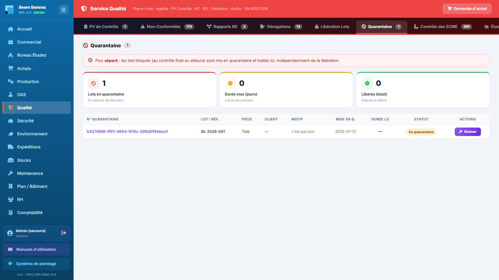
Quarantaine — surveillez la colonne Durée : rouge = plus de 5 jours sans décision.
⚠ capture à rafraîchir — le bouton rouge « Décider » et la fenêtre de décision sur un lot reçu d'un fournisseur ne figurent pas encore sur la capture ci-dessus.
Pas à pas — décider d'un lot reçu d'un fournisseur (bouton « Décider »)
Un PV de contrôle de réception non conforme (Expéditions → Réceptions) envoie toujours le lot en quarantaine, avec une non-conformité « réception fournisseur ». Rien n'est entré en stock : c'est ici qu'on tranche.
Sur la ligne du lot, cliquez le bouton rouge « Décider ». La fenêtre rappelle le fournisseur, le n° de bon de commande, le n° de BL, la NC et le motif de mise en quarantaine.
Vérifiez la quantité du lot : elle est reprise du bon de livraison. Ne la corrigez que si elle est inconnue.
Choisissez ce qu'on fait du lot :
Renvoyer au fournisseur — tout le lot repart, rien n'entre en stock.
Dérogation avec le fournisseur — le lot est accepté en l'état et entre en stock. Vous pouvez noter la réf. de la dérogation et la réfaction obtenue (€ HT) : une réfaction crée un avoir fournisseur.
Entrée partielle en stock — saisissez la quantité acceptée (c'est elle qui entre en stock ; le reste s'affiche à côté), puis dites si le reste repart chez le fournisseur ou part au rebut chez nous.
Pour un renvoi ou une entrée partielle, choisissez la compensation du fournisseur : Avoir (inscrit aux Achats, montant pré-rempli au prix unitaire du bon de commande et modifiable) ou Remplacement (le fournisseur relivre : son bon de commande rouvre sa réception de la quantité non acceptée).
Saisissez le motif de la décision — obligatoire, 3 caractères minimum : ce qui a été constaté et ce qui a été convenu avec le fournisseur.
Cliquez « Enregistrer la décision ». L'ERP résume ce qu'il a fait (entrée en stock, quantité à renvoyer, avoir inscrit, remplacement attendu) et signale tout ce qui n'a pas pu se faire tout seul.
Le rebut décidé ici est inscrit au registre des déchets du service Environnement.
L'avoir part dans Achats → Avoirs fournisseurs, au statut « À recevoir » : c'est l'acheteur qui le réclame et le suit ensuite.
Le retour à expédier apparaît dans Expéditions → Envois, carte « Retours fournisseurs ».
Une décision ne se prend qu'une fois. Elle est enregistrée avec son auteur, sa date et son motif ; un second clic est refusé (« ce lot n'attend plus de décision »). Vérifiez la quantité acceptée avant de valider.
Matière renvoyée sans remplacement. Si le lot repart et qu'aucun remplacement n'est attendu, un message vous prévient que la matière manque à l'affaire : la porte matière n'est pas ouverte par cette décision, il faut repasser commande.
Base non à jour. Tant que la mise à jour de la base n'est pas faite (migration 008 / script cloud-6), la décision est refusée avec un message qui le dit, et le bandeau orange correspondant s'affiche dans Achats → Avoirs fournisseurs.
Pas à pas — statuer la sortie de quarantaine (3 branches)
Pour une quarantaine interne (lot de production bloqué au contrôle final, palette, outillage) : bouton violet « Statuer ».
Cliquez sur « Statuer » : la fenêtre affiche l'objet concerné et le champ « Décision par » (prérempli « Qualité »).
Branche 1 — Validation managériale : choisissez la priorité (normale ou critique) et cliquez sur « Soumettre à la Direction ». Le dossier passe en statut « Validation Direction » ; la décision prise par la Direction (dans Direction › À valider) libère ou rejette automatiquement l'objet.
Branche 2 — Dérogation : cliquez sur « Créer une dérogation ». Le lot est libéré sous dérogation et une demande préremplie est créée, à compléter et envoyer depuis l'onglet Dérogations.
Branche 3 — Décision immédiate : saisissez le texte de la décision (ex. « Libéré après retouche », « Rebut », « Accepté en l'état ») puis cliquez sur « Libérer » ou « Rejeter ». Le texte de décision est obligatoire.
Règles & points d'attention
Un objet en quarantaine bloque les BL qui le concernent (porte qualité côté Expéditions).
L'entrée en quarantaine se fait depuis une NC (onglet Non-Conformités), par le blocage d'un lot à la libération, ou par un PV de contrôle de réception non conforme — pas directement ici.
Un PV de réception non conforme met toujours le lot en quarantaine, quelle que soit la suite envisagée : c'est ce qui garantit qu'aucune marchandise refusée n'entre en stock sans décision tracée.
Astuce : réservez la branche « Validation managériale » aux cas à enjeu (client sensible, coût élevé) : la Direction est notifiée et sa décision s'applique sans autre manipulation.
7
Contrôle des ECME
À quoi ça sert. Cet onglet gère le parc d'Équipements de Contrôle, Mesure & Essai (pieds à coulisse, micromètres, tampons, balances…) : identité de chaque instrument, statut périodique calculé en direct à partir de la prochaine échéance, saisie des PV de vérification (avec calcul automatique des erreurs de justesse Ej et de fidélité Ef) et fiche de vie complète imprimable.
Ce que vous voyez
Cinq tuiles KPI : ECME au parc (avec le nombre de vérifications tracées), Valides, À vérifier < 30 j, En retard, Réformés. Dessous, le bandeau « Contrôles à faire » liste sous forme de pastilles cliquables les ECME en retard ou à échéance ≤ 30 jours (actualisé chaque jour) — ou un bandeau vert si tout le parc est dans sa validité. Des filtres (Tous · En retard · À vérifier bientôt · Valides · Réformés) précèdent le tableau : Code, Désignation, Type, Localisation, Périod., Dernière vérif., Prochaine (avec « X j de retard » ou « dans X j »), Statut, Actions.
Statut live (recalculé à l'affichage, jamais stocké) : Valide · À vérifier bientôt (échéance ≤ 30 j) · En retard · Réformé · « À planifier » si aucune échéance n'est connue.
Quatre actions par ligne : Nouvelle vérification (PV) (règle violette), Fiche de vie (document bleu, avec le compteur de vérifications), Modifier l'identité (crayon), Supprimer.
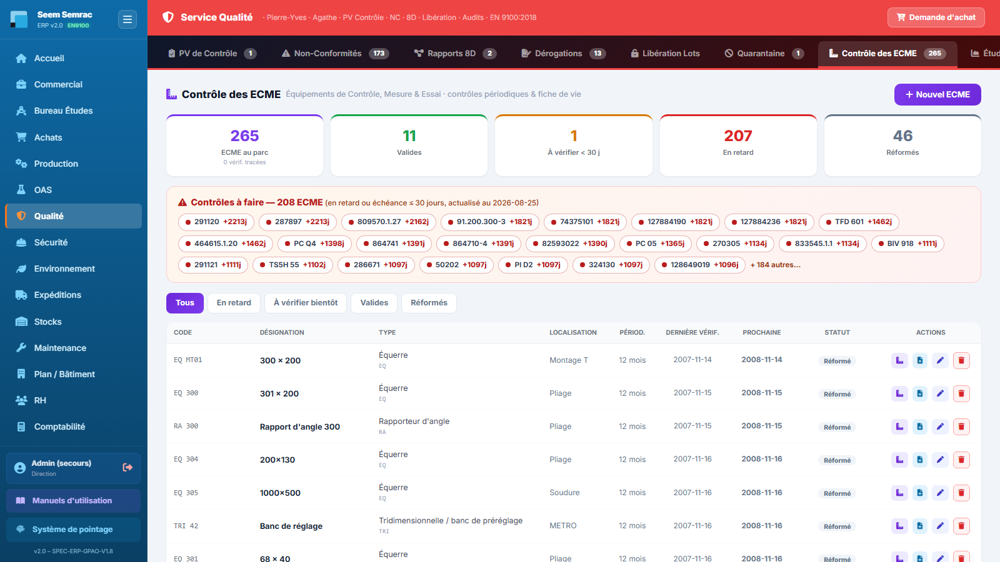
Contrôle des ECME — le bandeau « Contrôles à faire » est votre liste de travail du jour : chaque pastille ouvre directement le PV de vérification.
Pas à pas — créer un ECME
Cliquez sur « Nouvel ECME » et renseignez l'identité : code d'identification (ex. « JP 1 »), désignation (obligatoire), type (liste des familles : PC pied à coulisse, JP jauge de profondeur, MI micromètre, tampons filetés, balance…), marque, modèle, n° série, n° de commande d'achat, emplacement, activité (Seem / Semrac), responsable, capacité/étendue, précision, incertitude.
Indiquez la périodicité (12 mois par défaut), la date de dernière vérification et la mise en service ; pour un étalonnage externe, l'organisme et la référence du certificat.
Enregistrez : l'ECME rejoint le parc et son statut périodique se calcule aussitôt.
Pas à pas — saisir un PV de vérification
Cliquez sur la règle violette (ou sur une pastille du bandeau « Contrôles à faire ») : la fenêtre « PV de vérification » s'ouvre.
Renseignez la date, l'intervenant, le lieu (interne ou externe), l'étalon utilisé (cale n°), la réf. du PV, l'indice et les interventions réalisées.
En interne, remplissez la grille de mesures adaptée à la famille de l'instrument : pour un pied à coulisse (PC), 5 sections de becs avec valeur de cale (Vc) et 3 relevés → la moyenne Vcr et l'écart Ej se calculent seuls ; pour les familles JP, MI, CO, FO, 4 points de mesure avec cote nominale (Cn) et 5 relevés → moyenne MJ et Ej = Cn − MJ calculés automatiquement, Ef = étendue des relevés au point de plus fort écart. Les familles sans grille détaillée se contentent du résultat et de la décision.
Ej et Ef s'affichent automatiquement ; lisez la classe sur votre tableau des écarts et saisissez-la (classe justesse, fidélité, classe retenue) — l'ERP n'invente aucun seuil.
Choisissez le résultat (B — Bon, M — Moyen, HS — Hors service), la décision (Conforme / Non conforme, avec motif si NC), le visa du responsable et la date « À refaire avant » (proposée automatiquement = date + périodicité).
Cliquez sur « Enregistrer le PV » : la vérification alimente la fiche de vie et recalcule la prochaine échéance de l'instrument.
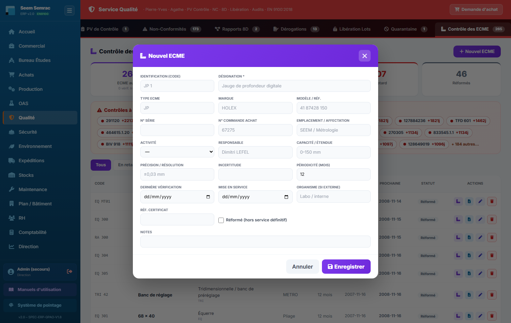
PV de vérification ECME — la grille de mesures dépend de la famille ; Ej et Ef (encadré violet) se calculent en direct pendant la saisie.
Pas à pas — consulter la fiche de vie
Cliquez sur l'icône document bleu : la fiche de vie s'ouvre — identité complète de l'instrument + journal des opérations (date, intervenant, lieu, interventions, Ej, Ef, résultat, décision/classe, visa, prochaine échéance).
Le bouton « PDF » imprime la fiche de vie ; le bouton « Nouvelle vérification » enchaîne directement sur la saisie d'un PV.
Règles & points d'attention
Le statut n'est jamais figé en base : il se déduit chaque jour de la prochaine échéance — un instrument « Valide » aujourd'hui peut être « À vérifier bientôt » demain.
Cochez « Réformé » dans l'identité pour sortir définitivement un instrument du service : il quitte les alertes mais reste consultable.
Pour un étalonnage externe, la grille de mesures est remplacée par les champs organisme + référence du certificat.
Attention : « Supprimer » efface l'ECME et tout son historique de vérifications. Pour un instrument hors service, préférez toujours « Réformé ».
8
Étude de capabilité
À quoi ça sert. Cet onglet mesure la capabilité des machines et process de l'atelier (SPC) : chaque contrôle de cote — saisi ici par la Qualité ou par les opérateurs depuis leur BDT — alimente une carte de contrôle aux écarts réduits, qui produit les indices Cp / Cpk, le pourcentage conforme et le PPM. On sait ainsi quelles machines tiennent leurs tolérances.
Ce que vous voyez
À gauche, la liste « Process & machines » avec recherche : chaque ressource porte un badge Machine ou Manuel et son dernier Cpk (ou « non étudié »). En cliquant sur une ressource, l'espace de travail à droite affiche : l'en-tête (machine liée et sa tolérance par défaut, nombre de contrôles, bouton « Nouveau contrôle ») et trois vues :
Liste des contrôles — colonnes Date, Cote, Pièce, Mesure, Écart réd. (rouge si |écart| > 1), Par (Qualité en violet, opérateur en vert), Conf. — triable par opérateur d'une case à cocher.
Carte complète — la carte aux écarts réduits de tous les contrôles (opérateurs + qualité) : verdict Capable (Cpk ≥ 1,33) · Limite (≥ 1) · Non capable (< 1) · À étoffer, avec Cp, Cpk, σ réduit, % conforme et PPM. Sur le graphique : point rouge = hors tolérance, violet = contrôle qualité.
Par opérateur — une carte individuelle par contrôleur (et une pour la Qualité), chacune avec son propre Cp/Cpk.
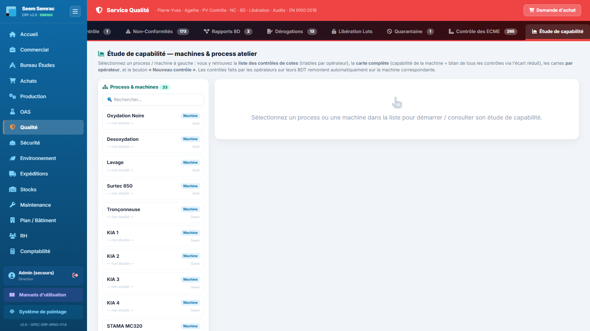
Étude de capabilité — sélectionnez une ressource à gauche ; la carte complète donne le verdict Capable / Limite / Non capable de la machine.
Pas à pas — enregistrer un contrôle de cote
Sélectionnez la ressource dans la liste de gauche, puis cliquez sur « Nouveau contrôle ».
Vérifiez la machine, saisissez la pièce, la cote (ex. Ø12 H7), la valeur nominale et la mesure relevée.
Les tolérances mini (LSL) et maxi (USL) se préremplissent depuis la tolérance par défaut de la machine — ajustez-les si le plan impose autre chose. Indiquez le contrôleur.
Cliquez sur « Enregistrer » : le point s'ajoute aux cartes et les indices se recalculent.
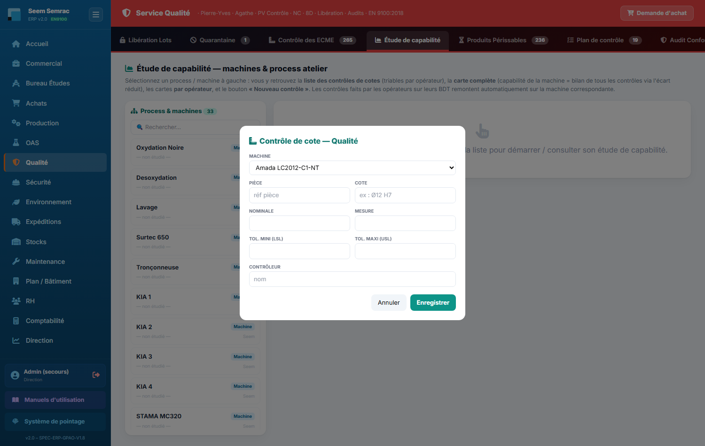
Contrôle de cote — Qualité — la Machine est présélectionnée depuis la ressource choisie à gauche ; saisissez Pièce, Cote (ex. Ø12 H7), Nominale et Mesure, puis vérifiez le couple Tol. mini (LSL) / Tol. maxi (USL) prérempli. « Enregistrer » ajoute le point à la carte aux écarts réduits et recalcule Cp/Cpk ; le Contrôleur saisi ici détermine la carte individuelle de la vue « Par opérateur ».
Règles & points d'attention
Les contrôles saisis par les opérateurs sur leurs BDT remontent automatiquement sur la machine correspondante : la carte complète agrège tout, toutes pièces confondues.
La carte travaille en écarts réduits (position de la mesure dans sa tolérance) : c'est ce qui permet de mélanger des pièces et des cotes différentes sur une même machine.
Cote, nominale, mesure et les deux tolérances sont obligatoires pour enregistrer.
Astuce : la vue « Par opérateur » sert aussi à détecter un écart de méthode de mesure : si un seul contrôleur dérive, le problème est plus probablement humain que machine.
9
Produits Périssables
À quoi ça sert. Suivi des produits à durée de vie limitée (colles, résines, produits chimiques…) par lot, conformément au formulaire PRA2-D1 : réception, péremption, date d'alerte, lieu d'utilisation, et consommation en FIFO. Le statut de chaque lot est recalculé automatiquement à partir des dates.
Ce que vous voyez
Des bandeaux d'alerte apparaissent si nécessaire : rouge « X lot(s) expiré(s) — retrait immédiat requis » et orange « X lot(s) à renouveler / proches péremption ». Puis des filtres (Tous · Valides · À renouveler · Expirés · Archivés / épuisés), la recherche, le bouton « Nouveau lot » et le tableau : Produit (avec fournisseur et n° de lot fournisseur), Code, Réception, Péremption, Alerte, Lieu, Inventaire (quantité courante / initiale + unité), Sorties, Statut, Actions (Sortie · Modifier · Supprimer).
Statuts calculés : Valide ✓ · À renouveler ⚠ (date d'alerte atteinte, ou péremption dans ≤ 30 jours) · Expiré ✗ (péremption dépassée — la ligne est surlignée) · Archivé.
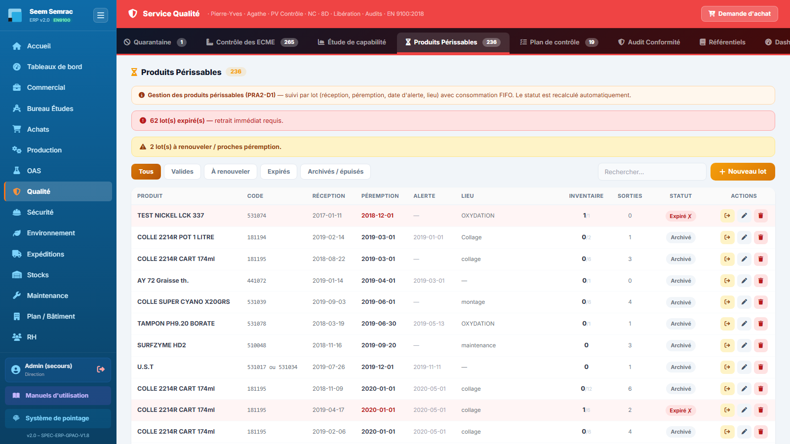
Produits Périssables — les bandeaux d'alerte en tête signalent les lots expirés ou proches de la péremption ; la colonne Inventaire suit la consommation.
Pas à pas — enregistrer un lot puis suivre sa consommation
Cliquez sur « Nouveau lot » et renseignez au minimum le nom du produit (obligatoire), puis les dates (réception, péremption, alerte), les quantités et le lieu (voir tableau).
Enregistrez : le statut du lot se calcule aussitôt selon les dates saisies.
À chaque consommation, cliquez sur l'icône Sortie de la ligne : indiquez la quantité sortie (bornée par le reste), la date, le n° de commande client et le motif, puis « Valider la sortie » — l'inventaire courant se décrémente et la sortie s'ajoute au compteur.
Champ
Saisie
Obligatoire
Explication
Produit
Texte
Oui
Nom du produit périssable.
Code produit
Texte
Non
Référence fabricant.
Fournisseur
Texte (aide à la saisie)
Non
Choisi dans la liste des fournisseurs connus de l'ERP.
N° lot fournisseur · N° commande fourn.
Texte
Non
Traçabilité amont du lot.
Date réception · Date péremption · Date d'alerte
Dates
Recommandé
Les deux dernières pilotent le statut (À renouveler / Expiré).
Délai appro
Texte
Non
Ex. « 8 semaines » — pour anticiper le renouvellement.
Lieu d'utilisation
Texte
Non
Zone ou machine où le produit est utilisé.
Qté initiale · Inventaire courant · Unité
Nombres / texte
Non
Stock du lot (boîtier, L, kg…) — l'inventaire baisse à chaque sortie.
Observations
Texte
Non
Remarques libres.
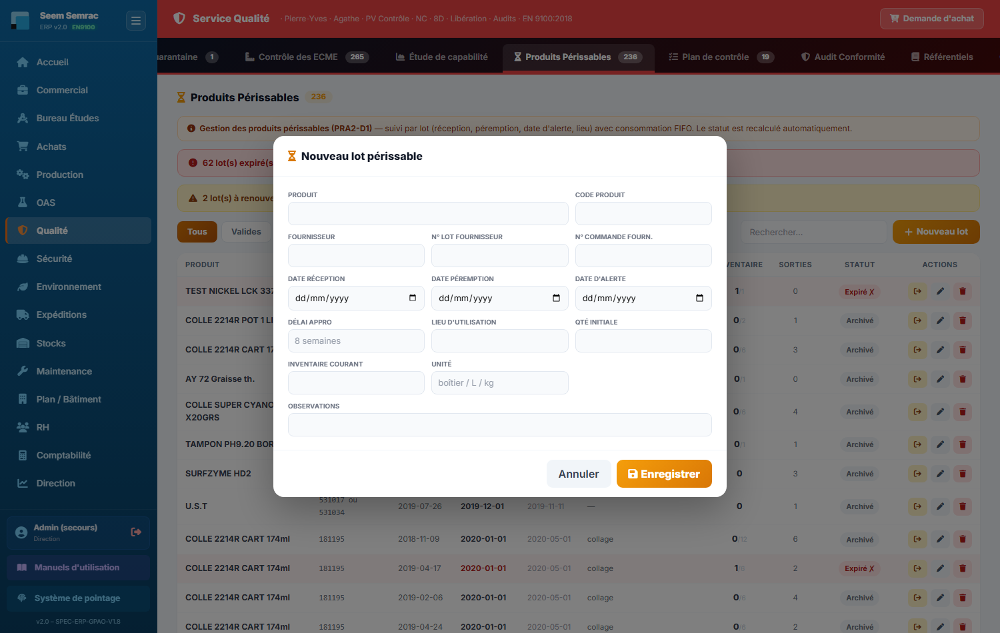
Nouveau lot périssable — les trois dates (réception, péremption, alerte) déterminent le statut affiché dans la liste.
Règles & points d'attention
Un lot expiré doit être retiré immédiatement de l'atelier : c'est une exigence d'audit (préservation du produit).
La consommation suit la logique FIFO : sortez d'abord le lot le plus ancien.
Même sans date d'alerte saisie, un lot passe « À renouveler » quand sa péremption est à 30 jours ou moins.
Astuce : renseignez la date d'alerte en tenant compte du délai d'approvisionnement : alerte = péremption − délai appro, pour recommander à temps.
10
Plan de contrôle
À quoi ça sert. Le plan de contrôle (référence PRP1-D9) est le plan d'inspection EN 9100 / ISO 9001 de l'entreprise : pour chaque opération, de la réception au contrôle final, il fixe les paramètres à contrôler, l'ECME ou l'outil à utiliser, la fréquence et l'échantillonnage, le critère d'acceptation (règle C=0, zéro défaut), le responsable, le type de contrôle et le plan de réaction en cas d'écart.
Ce que vous voyez
Quatre tuiles KPI : Lignes de contrôle, Opérations couvertes, Avec ECME/outil, Contrôles destructifs. Puis la recherche, les boutons « Exporter PDF » et « Nouvelle ligne », et le tableau : N°, Opération / Classification, Paramètres, ECME / Outils, Fréquence & échantillon, Critère, Responsable, Type (Non destructif / Destructif), Plan de réaction, Actions (Modifier · Supprimer).
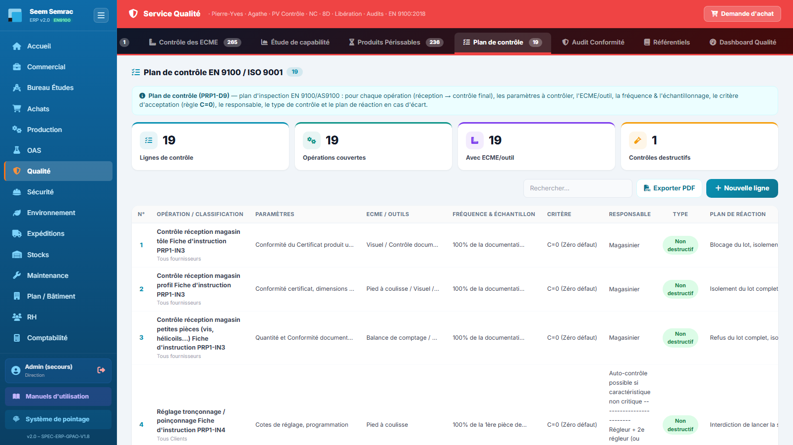
Plan de contrôle — une ligne par opération contrôlée ; l'export PDF produit le document A4 paysage à jour pour les audits.
Pas à pas — ajouter ou modifier une ligne
Cliquez sur « Nouvelle ligne » (ou le crayon d'une ligne existante).
Renseignez le n° de ligne, l'opération (obligatoire — la liste propose les process de l'atelier), la classification client, les paramètres à contrôler, l'ECME / outil (la liste propose le parc ECME de l'onglet 7), la fréquence & l'échantillonnage, le critère d'acceptation (par défaut « C=0 (Zéro défaut) »), le responsable, le type de contrôle, l'activité (Seem / Semrac) et le plan de réaction en cas d'écart.
Enregistrez. Pour diffuser le document, cliquez sur « Exporter PDF » : le plan complet s'imprime, trié par n° de ligne, avec le logo et la mention de la règle C=0.
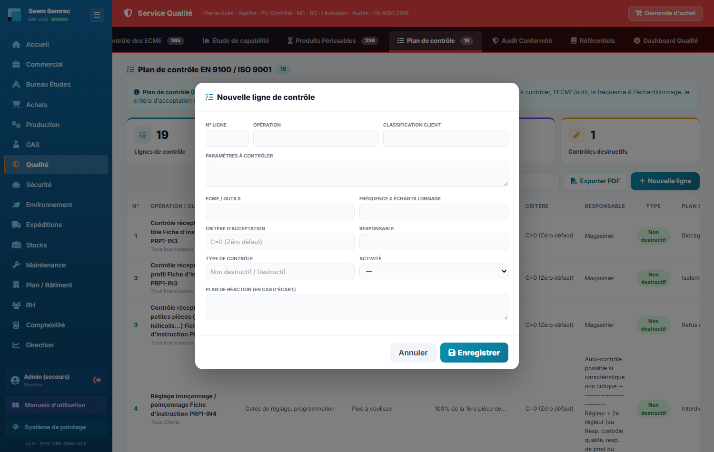
Nouvelle ligne de contrôle — la fenêtre reprend exactement les colonnes du tableau : N° ligne, Opération (obligatoire) et Classification client en tête, puis Paramètres à contrôler, ECME / outils, Fréquence & échantillonnage, Critère d'acceptation (« C=0 (Zéro défaut) » par défaut), Responsable, Type de contrôle (Non destructif / Destructif), Activité et Plan de réaction (en cas d'écart). « Enregistrer » insère la ligne dans le plan et elle part aussitôt dans l'export PDF d'audit.
Règles & points d'attention
Le champ « Opération » est obligatoire ; nommer l'ECME depuis la liste garantit la cohérence avec le parc réel.
Le plan de réaction est ce que l'auditeur vérifie en premier : décrivez la conduite à tenir concrète (tri, blocage, NC…).
Astuce : après toute évolution du parc ECME ou d'un process, relisez les lignes concernées — le plan de contrôle doit toujours refléter les moyens réellement disponibles.
11
Audit Conformité
À quoi ça sert. C'est le module d'audits internes du SMI (système de management intégré) couvrant Qualité (ISO 9001 / EN 9100), Sécurité (ISO 45001), Environnement (ISO 14001) et Sécurité de l'information (ISO 27001). Il ordonnance le programme annuel, fait réaliser les audits sur des grilles de questions (dont des questions AUTO pré-remplies par l'ERP), transforme les écarts en NC et trace les plans d'action jusqu'à clôture. Quatre sous-onglets : Programme, Constats & plans d'action, Grilles, Référentiels.
Sous-onglet Programme
L'ordonnancement annuel (EN 9100 §9.2). En haut : le sélecteur d'exercice (une pastille par année), le bouton « Reconduire pour AAAA+1 » et « Nouvelle ligne ». Pour l'exercice affiché : quatre KPI (Lignes au programme, Taux de réalisation, En retard, Plans d'action soldés), puis le calendrier annuel — 12 mois, une case par jour, colorée selon l'état : bleu pâle = aucun audit, bleu foncé = programmé, jaune = pas fait (échéance dépassée), rouge = non conforme (NC ouverte), vert = soldé conforme. Les lignes du programme sont ensuite regroupées en sections : Audits de processus (thèmes A–K), Audits de poste & flash (thèmes T1–T9), Procédés spéciaux (soudure, traitement de surface OAS / Surtec 650, CND…), Exigences client. Colonnes : Entité auditée, Type, Thèmes, Référentiels, Date cible (avec alerte retard), Auditeur, Statut, Actions.
Statuts d'une ligne : À planifier · Planifié · Réalisé · Rapport envoyé · Retour reçu · Clôturé.
Actions par ligne : ✎ Modifier (date, auditeur, statut, thèmes, référentiels, grille…), fiche d'évaluation (réaliser l'audit), 📄 Rapport PDF (téléchargeable seulement une fois l'audit soldé), 🗑 Supprimer.
Le calendrier est interactif : cliquer une case avec audit permet de le consulter ou le déprogrammer ; cliquer une case vide propose d'affecter un audit non programmé (ou d'en déplacer un) à cette date.
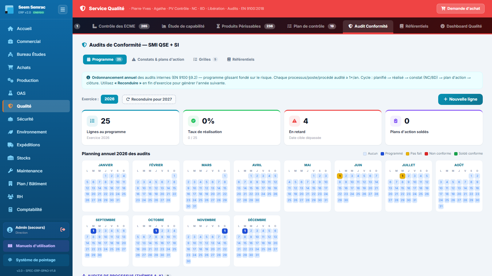
Audit › Programme — le calendrier annuel code l'état de chaque journée d'audit ; les sections regroupent processus, postes et procédés spéciaux.
Pas à pas — réaliser un audit
Sur la ligne du programme, cliquez sur la fiche d'évaluation (icône presse-papiers) : la fiche s'agrandit avec les questions de la grille associée.
Pour chaque question, cochez Conforme / Non conforme / Axe d'amélioration et saisissez la preuve ou le constat. Les questions en mode AUTO arrivent pré-remplies depuis les sondes de l'ERP (parc ECME, habilitations, DUER, FDS, périssables, VGP, bains, NC ouvertes…) avec leur preuve.
Ajoutez un constat global si besoin, puis choisissez : « Enregistrer (réalisé) » — l'audit reste modifiable — ou « Solder l'audit » — clôture définitive, le rapport PDF devient téléchargeable sur la ligne.
Pas à pas — reconduire le programme pour l'année suivante
En fin d'exercice, cliquez sur « Reconduire pour AAAA+1 » et confirmez.
Tout le programme est recopié vers l'année suivante : les dates sont décalées d'un an et les statuts remis à « planifié ».
Sous-onglet Constats & plans d'action
Chaque réponse « Non conforme » ou « Axe » des fiches d'évaluation devient un constat listé ici (Audit / entité, Type NC ou Axe, Constat, Preuve, Action). Le bouton « Convertir en NC » crée une non-conformité avec le détecteur « Audit » : elle suit alors le cycle normal (8D → clôture) dans l'onglet Non-Conformités ; une fois convertie, le badge NC … remplace le bouton.
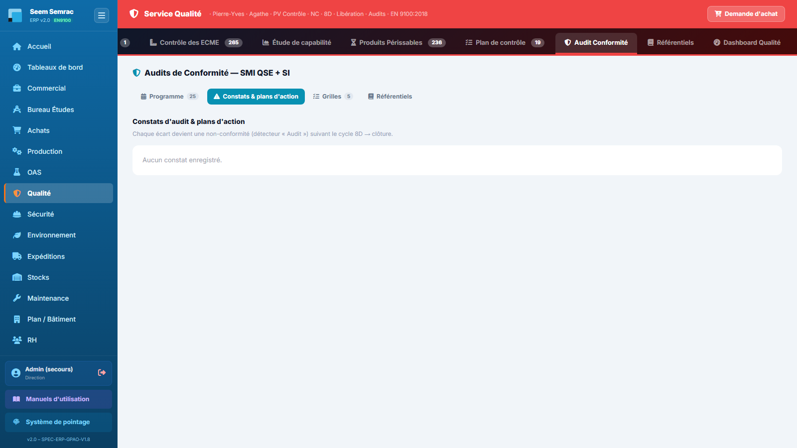
Audit › Constats — chaque écart d'audit se convertit en NC d'un clic ; le suivi se poursuit dans l'onglet Non-Conformités.
Sous-onglet Grilles
La bibliothèque de questionnaires réutilisables (issus du classeur qualité : contrôle final, soudure, emballage, informatique…). Chaque grille affiche son titre, sa cible (poste / processus / procédé), son référentiel et ses questions : n°, libellé (avec la preuve attendue), clause (ex. EN 9100 §8.5.2), thème, mode (AUTO · ASSISTÉ · MANUEL) et sonde ERP pour le mode auto. Boutons : « vierge » (grille imprimable PDF), « + question », ✎ modifier / × supprimer une question, supprimer la grille, et « Nouvelle grille » en tête. Les grilles ne sont pas figées : vous pouvez les enrichir à tout moment.
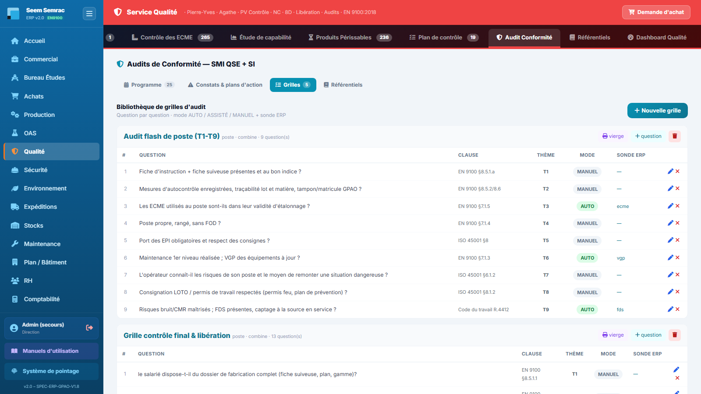
Audit › Grilles — le mode AUTO relie une question à une sonde ERP : la réponse se pré-remplit toute seule lors de l'audit.
Sous-onglet Référentiels
La documentation de référence du module : les thèmes d'audit processus A–K (code, thème, chapitres/clauses, périmètre), les thèmes de poste / terrain T1–T9, et les grilles de conformité clause-par-clause pour l'auto-évaluation, une par norme : ISO 9001, EN 9100, ISO 45001, ISO 14001, ISO 27001 (boutons de bascule entre normes).
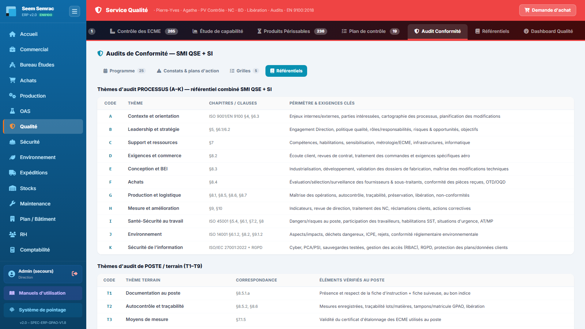
Audit › Référentiels — thèmes A–K et T1–T9, puis les grilles clause-par-clause des cinq normes du SMI.
Règles & points d'attention
Le rapport PDF d'un audit n'est disponible qu'une fois l'audit soldé — l'icône reste grisée avant.
Chaque processus, poste et procédé doit être audité au moins une fois par an (EN 9100 §9.2) : la matrice de couverture du Dashboard Qualité montre les trous.
La « Conformité vive » (surveillance auto-observée des sondes) et le tableau de bord des audits sont dans l'onglet Dashboard Qualité.
Attention : « Solder l'audit » est une clôture : la fiche n'est plus modifiable ensuite. Utilisez « Enregistrer (réalisé) » tant que des réponses peuvent encore évoluer.
12
Référentiels
À quoi ça sert. C'est le dictionnaire QHSE de l'entreprise : les vocabulaires contrôlés utilisés partout ailleurs (formulaires de NC, dérogations, sécurité). Source unique partagée entre les services Qualité et Sécurité — on le consulte quand on hésite sur un code ou un terme.
Ce que vous voyez
Des cartes de consultation (lecture seule) : Acronymes, Imputation / secteurs (code → service), Types de NC, Types de défaut, Types de cause, Décisions qualité, Dérogations (types de demande et résultats : R = Refus, AT = Accord Total, AL = Accord Limité) et Sécurité (types et secteurs). Les acronymes notés « à confirmer » sont déduits du contexte.
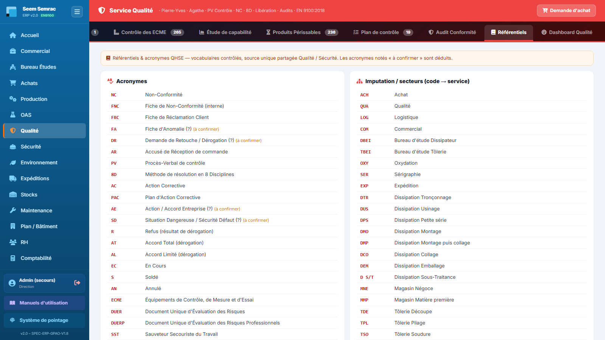
Référentiels — le vocabulaire officiel : c'est ici que l'on vérifie la signification d'un code avant de le saisir dans une NC ou une dérogation.
Pas à pas
Ouvrez l'onglet quand un code ou un acronyme vous échappe (ex. la signification d'une imputation ou d'un type de cause).
Utilisez les mêmes libellés dans vos saisies : c'est ce qui rend les Pareto et les filtres fiables.
Règles & points d'attention
Onglet en consultation : les listes se retrouvent automatiquement dans les menus déroulants des formulaires (NC, dérogations…).
13
Dashboard Qualité
À quoi ça sert. La synthèse chiffrée du service : état des NC, des 8D, de la quarantaine et des PV, analyse Pareto des non-conformités, et le pilotage du programme d'audits avec la « Conformité vive » — une surveillance automatique qui détecte les écarts directement dans les données de l'ERP.
Ce que vous voyez
Quatre tuiles KPI : NC ouvertes (dont critiques/bloquantes), Rapports 8D actifs, Lots en quarantaine (avec la durée max), PV validés (sur le total).
Conformité audits — les derniers audits réalisés avec leur score, et la prochaine échéance.
Pareto des non-conformités — barres triées décroissantes + courbe de % cumulé + seuil 80/20, sur six axes au choix : Nature, Cause (5M), Poste, Imputation, Type NC, Responsable. Sur l'axe Nature, cliquez une grande famille pour zoomer sur ses sous-catégories (bouton « ← toutes familles » pour revenir).
Section Audits de conformité : KPI (Réalisation du programme, Audits en retard, Items auto conformes, Plans d'action soldés) ; le bandeau Conformité vive — chaque sonde (ECME, habilitations, DUER, FDS, VGP, bains, NC…) affiche une carte Conforme / Écart détecté / Non renseigné avec sa preuve ; un item au rouge signifie que l'ERP n'est pas rempli au bon endroit — le constat s'écrit tout seul.
Matrice de couverture Processus × Thèmes (A–K) — coche verte = audité, point bleu = planifié, « · » = jamais couvert (exhaustivité EN 9100 §9.2).
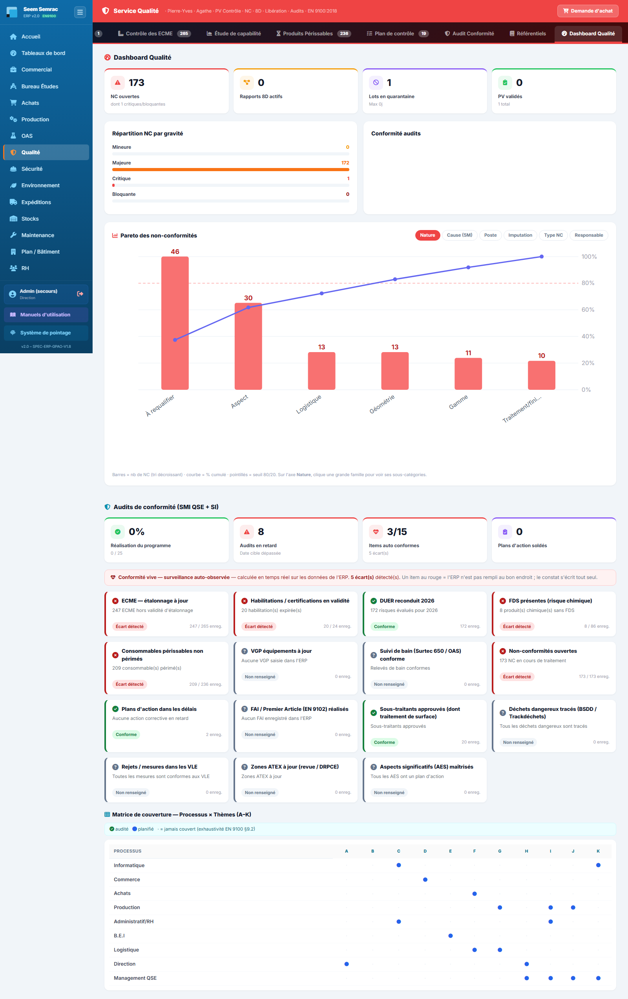
Dashboard Qualité — le Pareto se pilote par axes ; plus bas, la Conformité vive et la matrice de couverture des audits.
Pas à pas — exploiter le Pareto
Choisissez l'axe d'analyse (Nature, Cause 5M, Poste, Imputation, Type NC, Responsable) avec les pastilles en haut à droite du graphique.
Repérez les barres à gauche du seuil 80/20 : ce sont les familles qui concentrent l'essentiel des NC.
Sur l'axe Nature, cliquez une barre pour descendre dans ses sous-catégories et cibler l'action corrective.
Règles & points d'attention
La qualité du Pareto dépend directement de la saisie des champs Nature / Cause / Poste / Imputation dans les NC (onglet 2).
Un « écart » de la Conformité vive n'est pas forcément un problème terrain : c'est d'abord une donnée manquante ou périmée dans l'ERP — corrigez la saisie à la source.
Astuce : avant un audit de certification, passez la Conformité vive au vert et vérifiez la matrice de couverture : ce sont les deux premiers écrans qu'un auditeur comprendra immédiatement.